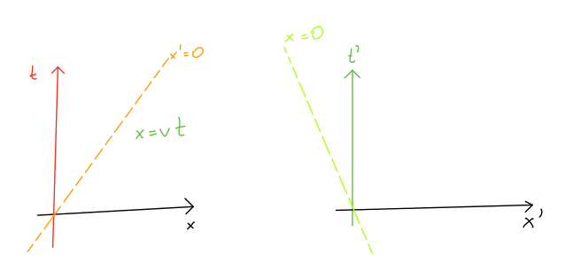
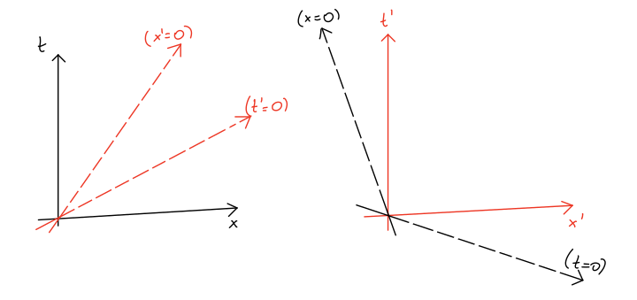
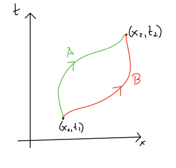
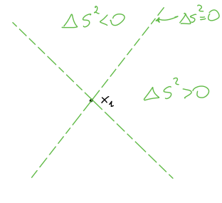
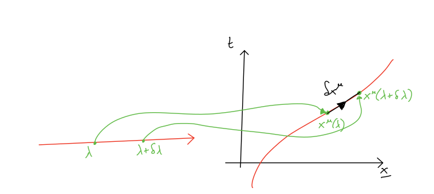
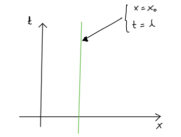
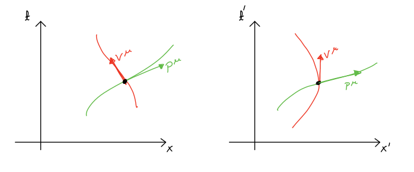
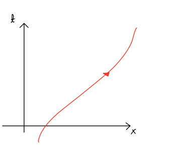
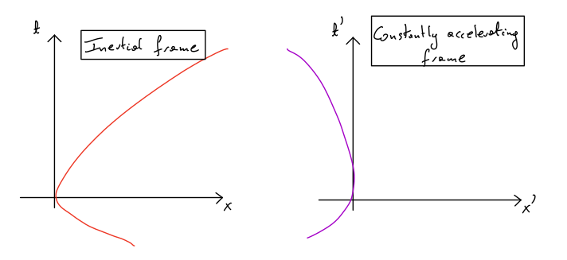
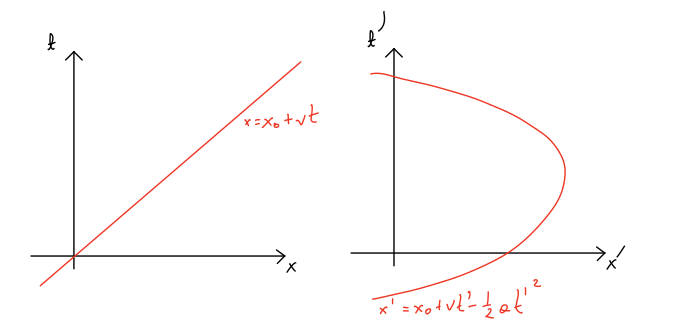

1. Week 1¶
1.1. Introduction¶
General Relativity is the theory developed by Albert Einstein in 1915 that describe properties of the spacetime in the presence of gravity. The essence of Einstein’s discovery can be summarised in a very simple statement
General Relativity
In these series of lectures you will learn how to understand the effects that we usually attribute to gravity: falling object, planets orbiting around their stars, etc., are due to the fact that the spacetime is curved in the presence of massive objects. Before explaining how this curved spacetime can be described, we will start with revisiting flat spacetime that we are familiar with in Special Relativity.
1.2. Newtonian physics:¶
In Newtonian physics, time is absolute \(\rightarrow\) all observables and clocks agree on all time measurements. The transformation law between inertial frames moving with constant relative velocity looks like this:
{kind=link}
The coordinate transformation between these two frames are given by:
We call these transformations the Galilean transformations. Laws of Newtonian physics are invariant under these transformation. For example, for a particle moving freely, i.e. no acceleration, we have
In particular, this defines an absolute global time coordinate.
Experiments show that this is good for velocities \(|v|\ll c\). But for \(v=\mathcal{O}(c)\), this breaks down and we need Special Relativity (SR).
In SR we still have inertial frames, that is frames that are not undergoing accelerations, with coordinates \((t,\underline{x})\) in which free particles travel at constant velocity \(\frac{d^2x}{dt^2}=0\).
But, the transformation between them is different because the time is not absolute and it is perceived differently by two observers!
1.3. Special relativity¶
1.3.1. Lorentz transformations.¶
In Special Relativity, the previous picture needs to be modified and it looks like this:
{kind=link}
The two inertial frames (in one spatial direction) are related to each other by Lorentz transformations:
where \(\gamma=\frac{1}{\sqrt{1-\frac{v^2}{c^2}}}\geq 1\). Importantly, as \(c\to \infty\), this reduces to Newtonian rule. In other words, when \(|v|\ll c\) then \(\gamma\sim1\) and we have
A very important consequence is that time measurements are not the same for all observers. In particular, the amount of time that passes according to a physical clock depends on how the clock moves:
{kind=link}
The time recorded by the two clocks \(A\) and \(B\) may not be the same. It will be even more important in Gereral Relativity: since there is no global notion of time then physical time interval measurements made by clocks do not correspond to the value of coordinate \(t\) on the spacetime.
1.3.2. Minkowski space¶
Let us establish some conventions for the Minkowski space that we will used in this lectire. We will write four-vectors as \((x^0,x^1,x^2,x^3)=(ct,x,y,z)=(x^\mu)\). The Minkowski space metric will be
i.e. \(\eta_{00}=-1\) and \(\eta_{ij}=\delta_{ij}\) where \(i,j=1,2,3\). This convention is different than the one that you used in the Field Theory lectures. This is because of the discussion below where we explain what we mean by space-like separation of events. In geometry it is natural to consider the metric for which the space-like separate events have their invariant interval positive.
In this language the Lorentz transformations can be written as:
Given two events with coordinates \(x_1^\mu\) and \(x_2^\mu\), the separation between these events is the four-vector \(\Delta x^\mu=x_2^\mu-x_1^\mu\). If we now define the quantity
then it is invariant under Lorentz transformations.
We say that the separation between two events given by the four-vector \(\Delta x^\mu\) is
spacelike if \(\Delta s^2>0\)
null if \(\Delta s^2=0\)
timelike if \(\Delta s^2<0\)
This can be visualised by drawing the light-cone decomposition of the Minkowski space:
{kind=link}
1.3.3. Proper time¶
In the previous part we find invariant interval between two events. In General Relativity we will need to often look at events that are very close to each other, and often at events that happen along paths. We need to be able to describe such events.
Consider a path \(\gamma\) in spacetime parametrised by the parameter \(\lambda\):
{kind=link}
Let
Then we can define \(\delta s^2=\eta_{\mu\nu}\delta x^\mu\delta x^\nu\). We say that the path \(\gamma\) is spacelike/null/timelike if \(\delta s^2\) is spacelike/null/timelike along the whole path.
In Special/General Relativity:
massless particles (e.g. photons) follow null trajectories
massive particles (e.g. clocks) follow timelike trajectories
(A spacelike trajectory corresponds to an extended object, e.g. a rod)
Now we want to define what we mean by time measurements for the observer moving along a certain path. The proper time recorded by a clock moving along a timelike trajectory:
where the first integral is taken from the time at the start of the trajectory to the end of the trajectory.
The same statement written in terms of infinitesimal quantities is
Exercise
Show that if you use a different parametrisation of the path \(\gamma\): \(\lambda'=\lambda'(\lambda)\), then \(c^2 d\tau^2\) remains the same.
Equivalently, since for timelike trajectories we have \(ds^2<0\) then \(c\,d\tau=\sqrt{-ds^2}\) and we can write
For example, the \(t\) coordinate of an inertial frame corresponds to the proper time as recorded by a clock which is stationary in that frame:
{kind=link}
In this case \(\frac{dx^{\mu}}{d\lambda}=(\frac{d(c\lambda)}{d\lambda},\underline{0})=(c,\underline{0})\) and \(\eta_{\mu\nu}\frac{dx^\mu}{d\lambda}\frac{dx^\nu}{d\lambda}=(-1)c^2=-c^2\).
For any timelike path, we can use \(\tau\), the proper time, as the parameter that parametrises our path. Then
1.3.4. Four-velocity and four-momentum¶
We define the four-velocity of the particle as
where \(\underline{v}=\frac{d\underline{x}}{dt}\). This will be the same in General Relativity.
Recall also that the four-momentum is \(p^\mu=mv^\mu\), where \(m\) is the rest mass. There is an important property
If we set \(c=1\) then the four-momentum has components \(p^{\mu}=(E,\underline{p})\).
Exercise
Find an invariant expression for the energy of the particle as seen by an observer with 4-velocity \(v^{\mu}\).
To answer this question we need to first ask what we mean by ‘seen by an observer’. This just means that we are looking for the first component of the four-momentum in the inertial frame where the observer is at rest at a given point.
{kind=link}
In the rest frame the four-velocity of the observer is \(v'^{\mu}=(1,\underline{0})\). Then \(p'^{\mu}=(E',\underline{p}')\) and we have \(\eta_{\mu\nu}v'^{\mu}p'^{\nu}=-E'\). Since this expression is invariant and therefore independent of the frame, we find that \(E'=-\eta_{\mu\nu}v^{\mu}p^{\nu}\), where \(p^\mu\) is in the four-momentum in the original frame.
This approach to solving problems in relativity will be quite common in General Relativity, where we will often go to the frame where things simplify, for example the (instantenous) rest frame, and find the solution there, and then use the fact that invariant quantities (fully contracted) can be calculated in any frame.
1.4. Action for relativistic particles¶
We want to recall basic facts about the action of relativistic particles.
We have already defined the proper time for timelike-trajectories
for the trajectory depicted below:
{kind=link}
Define the action for a relativistic free particle
We can use the Euler-Lagrange equations
The Lagrangian does not depend explicitly on \(x^\mu\) and therefore the right-habd side of this equation is vanishing. Then, by calculating the left-hand side:
we get
Now, we can use the following trick: let us parametrise the trajectory \(\gamma\) with the proper time: \(\lambda=\tau\), then \(\sqrt{-\eta_{\mu\nu} \dot{x}^\mu \dot{x}^\nu}=1\). That implies
We can compare it to the non-relativistic case to make connection to your previous knowledge of non-relativistic actions. If we consider the non-relativistic case, namely \(|\underline{v}|\ll c\), we have
The four-velocity \(v^\mu=(\frac{d(ct)}{d\tau},\frac{d\underline{x}}{d\tau})=\gamma(c,\underline{v})\), that implies \(\frac{dt}{d\tau}=\gamma\).
We have
that is the action for a non-relativistic particle with the three-velocity \(\underline{v}\) in a constant potential \(V(\underline{x})=mc^2\).
It is important to emphasize that this calculation only works for \(m\neq 0\).
There exists an alternative action that gives the same equations of motion but can be used for massless particles as well.
The Euler-Lagrange equations imply:
In this case we can set \(E=0\) to get null paths \(\rightarrow\) massless particle. If \(E>0\) we have a timelike path \(\rightarrow\) massive particle. In the latter case we can rescale the parametrisation as \(\lambda\to\lambda'=\sqrt{E}\lambda\) to get \(\eta_{\mu\nu}\dot{x}^\mu\dot{x}^\nu=-1\). The new parameter \(\lambda'\) is the proper time \(\tau\).
Warning
Word of warning when using the simpler action which we defined above: this action is suitable to describe classical physics trajectories, however the mass dimension of the action is not zero and there would be problems with quantising it.
1.5. Accelerating frames (Newtonian)¶
Before we close this part, we want to describe accelerating frames in Newtonian physics.
Consider two reference frames:
{kind=link}
These frames are accelerating with respect to each other and they are related by \(t'=t\) and \(x'=x-\frac{1}{2}at^2\).
A free particle in the inertial frame has \(x=x_0+vt\). In the second, non-inertial frame \((x',t')\) we find
This can be depicted as:
{kind=link}
The right-hand side frame is indistinguishable from a constant gravitational field strength of strength \(g=a\) in the negative \(x\)-direction. The equations of motion:
This is the same equation of motion as for a particle in a gravitational field.
Note
The mass cancelled in agreement with Galileo who noticed that the gravitational acceleration is independent of mass!. It can be phrased differently as the fact that the inertial mass is equal to the gravitational mass.
If we think that the acceleration in the non-inertial frame is due to gravity, then the other frame is a freely-falling frame, i.e. freely-falling frames are inertial.